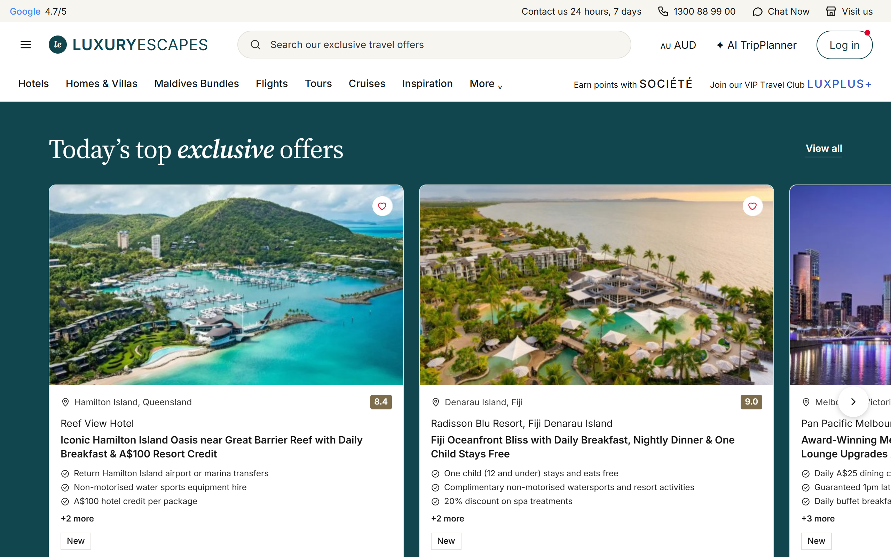
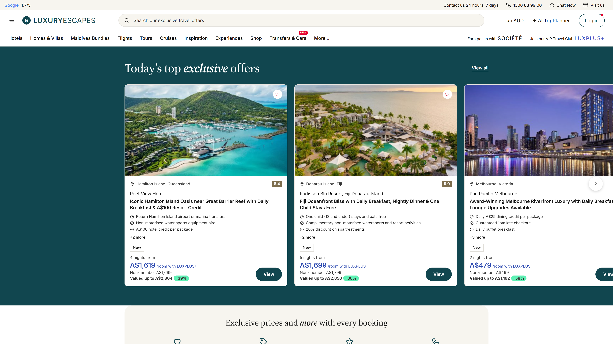
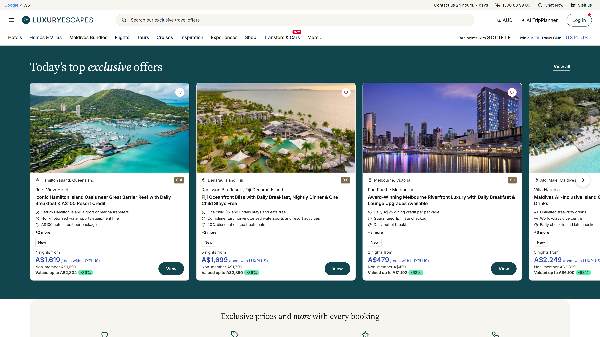

The content sits in a fixed column about 1140px wide. On a bigger screen every extra pixel goes into the side margins, while the header still runs edge to edge.
1280px wide in the browser

1920px wide. Same column, so the gap grows and offers still show 2.7 cards.

Margins set to 5% of the screen. Content lines up with the header and shows 3.5 offers.
